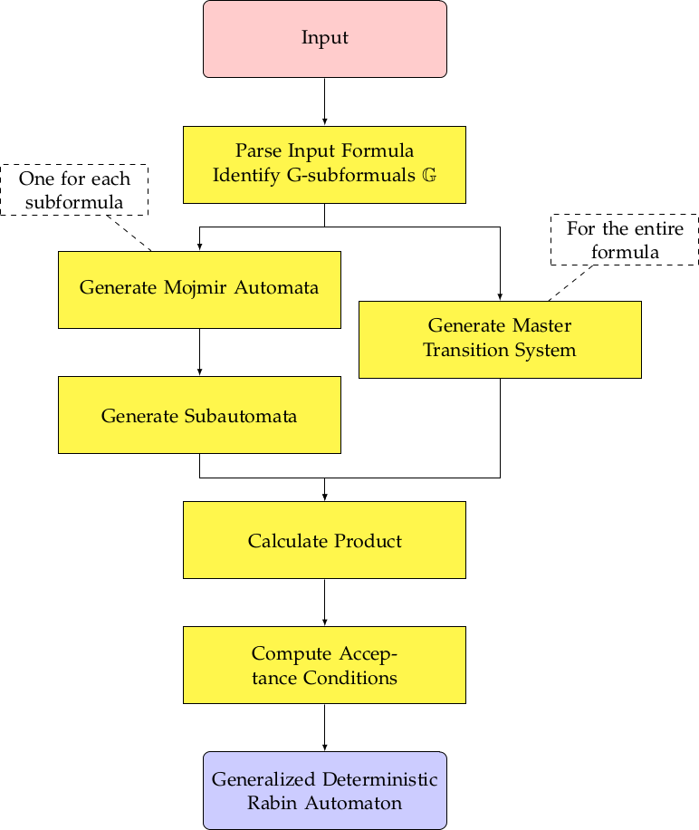

See: Description
| Package | Description |
|---|---|
| ltl2rabin | |
| ltl2rabin.LTL |
The main class is Main. The class that contains the core functionality, the computation of
the GDRA, is the GDRAFactory class.
We distinguish between Formula, which has limited functionality, and
PropEquivalenceClass, which defines the behaviour for propositionally equivalent sets
of formulas.
This picture gives an overview over the construction:

The input is handled by Main. The parsing is handled by an LTLFactory.
A MojmirAutomaton is constructed by a MojmirAutomatonFactory.
A SubAutomaton is constructed by a SubAutomatonFromMojmirFactory or a
SubAutomatonFromFormulaFactory. The Master Transition System, the product and the
acceptance conditions are computed by a GDRAFactory.